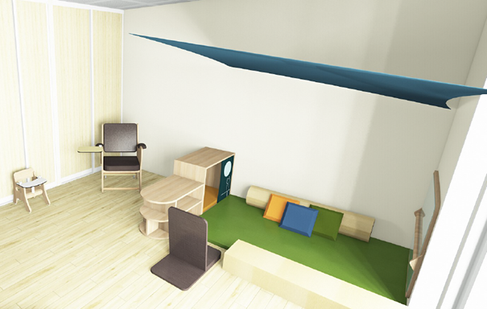
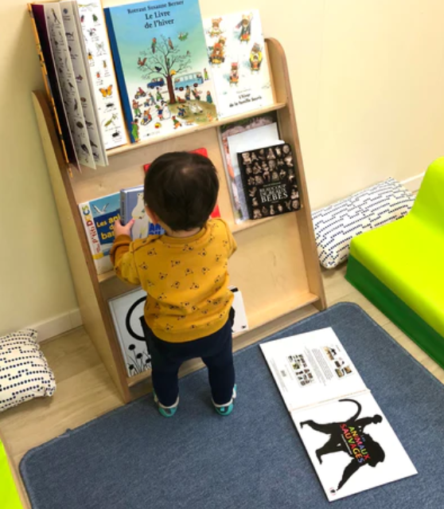
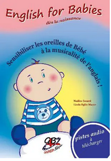

La Micro-crèche
Une structure privée qui peut accueillir 12 enfants simultanément (âgés de 2.5 mois à 4 ans)
Voir détails »

Espace Entreprise
Vos collaborateurs et votre entreprise ont tout à gagner
Voir détails »

Les tarifs
Les tarifs dépendent de vos ressources et du nombre d’heure d’accueil. Le formulaire de pré-inscription vous permet de demander un devis personnalisé.
Plus d'infos »
La Micro-Crèche
La micro-crèche Les Petits Globetrotters est une structure privée qui peut accueillir 12 enfants simultanément (âgés de 2.5 mois à 4 ans) du lundi ou vendredi de 7h15 à 18h45.
Les enfants des Sorinières mais également des autres communes seront les bienvenus !
Qu’est-ce qu’une micro-crèche ?
- Une solution d’accueil collectif en petit effectif (une douzaine d’enfants)
- Un accueil modulable : régulier, occasionnel, à temps plein ou partiel
- Un contrat d’accueil détaillé qui définit avec vous la prise en charge de votre enfant à tous les niveaux selon ses besoins
- Des professionnels diplômés
- Un projet pédagogique cohérents et innovants (initiation à l’anglais et au yoga)
- Des locaux modernes, fonctionnels et adaptés aux enfants
- Des activités originales, variées et épanouissantes
- Une relation privilégiée entre la famille et l’équipe
Micro-crèche souhaite que votre enfant passe une super journée ! Mais comment ?
- En lui offrant un environnement rassurant pour développer sa confiance en lui, et structurant pour le guider dans ses différents apprentissages
- En le laissant libre et autonome tout en lui assurant le cadre nécessaire
- En l’accompagnant en fonction de son rythme, de ses intérêts et de son développement qui lui est propre
« Chez les Petits Globetrotters tout est pensé pour le confort des enfants et des adultes ! »
Ainsi la micro-crèche comportera :
- Un espace d’accueil pour les familles avec porte-manteaux, chaises et table à langer.
- Une grande salle d’activités de 46 m2
- 3 dortoirs dont 2 semi-cloisonnés afin d’avoir un espace supplémentaire pour les activités de yoga, anglais, …
- Une cuisine équipée et respectant toutes les normes d’hygiène (contrôle des températures, respect de la marche en avant)
- Le bureau de la gestionnaire et de l’éducatrice de jeunes enfants pour accueillir les familles et la gestion de l’administratif
- Une salle dédiée au personnel avec un espace pour déjeuner et se reposer
- Un jardin avec des divers jeux (aux beaux jours les enfants apprécieront de goûter dehors !)


Le projet
Les petits globetrotters une entreprise qui s’engage pour le développement durable !
Notre premier défi concernera la construction et l’aménagement de la micro-crèche. Notamment en se conformant aux critères en vigueur en terme environnementale pour réduire les émissions de gaz à effet de serre et de créer un établissement ne consommant pas plus d’énergie qu’il n’en produit.
Les enfants dès le plus jeune âge seront sensibilisés à la nature et à sa préservation. Avec des activités en plein air. Le jardin avec son potager, sa végétation et son composteur, aura également une place essentielle et primordiale au sein des petits globetrotters.
Nous proposerons aux enfants des activités avec des matériaux recyclés, des recettes naturelles faites maison et ces projets à thème en faveur de la faune et de la flore…
Nos actions seront nombreuses et porteront dans les domaines pédagogiques mais également sur l’entretien, l’hygiène, l’eau, les énergies ou encore l’alimentation.
«Les explorations faites par l’enfant lui-même, à son initiative sont nourries par la qualité de son environnement humain et matériel, de sa niche écologique » Boris Cyrulnik.
Les valeurs
« Bienveillance, Eveil et Bien-Etre »
Les premières années de la vie de l’enfant sont les plus importantes. C’est pour cela que le principal objectif est de préserver son bien-être afin qu’il puisse s’épanouir pleinement dans ce lieu d’accueil collectif différent de la cellule familiale. La micro-crèche se doit d’être un lieu de socialisation et d’ouverture vers l’extérieur. Le but n’est pas uniquement un mode d’accueil mais aussi permettre de s’ouvrir à l’autre, au monde, de s’initier à une langue étrangère.

